Paintings & Prints
Monochrome Organic Abstract — Signed Canvas, Unframed
· 21st century
Price Upon Request
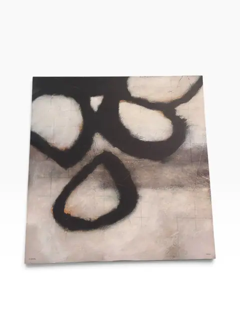
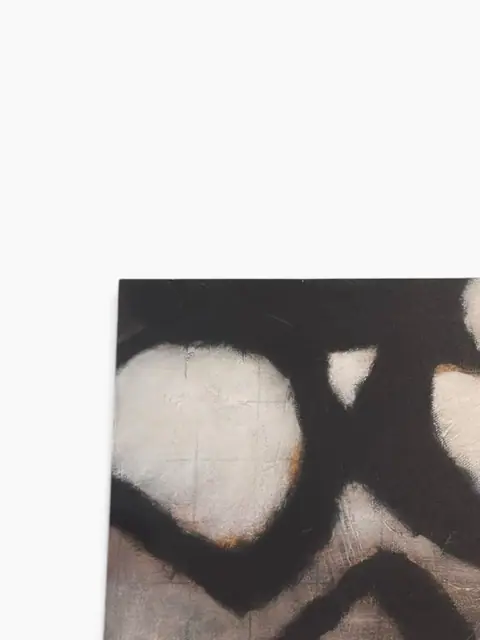
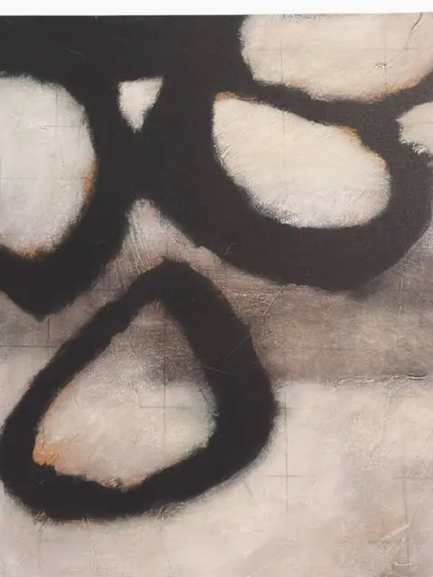
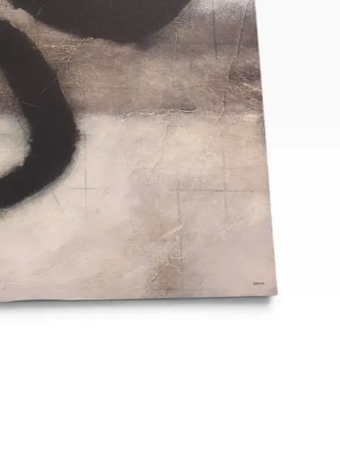

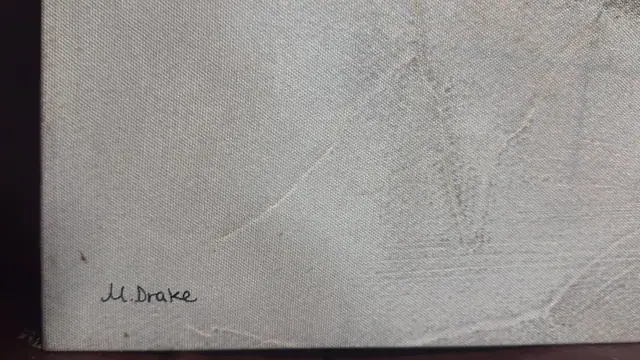
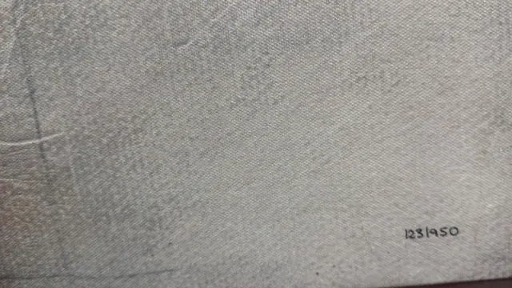
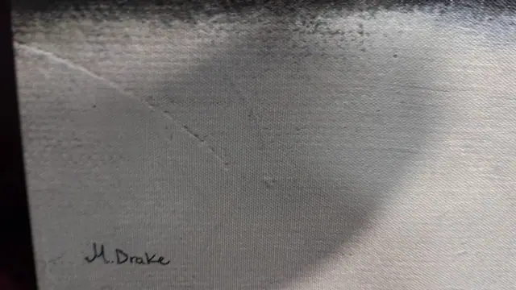

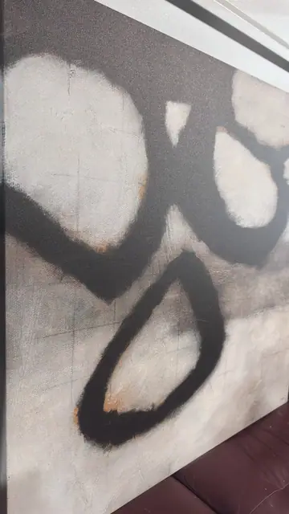
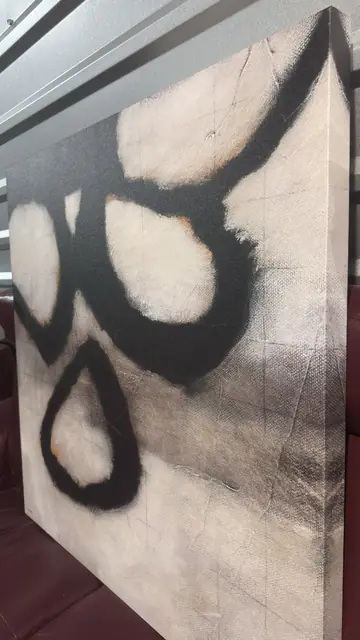
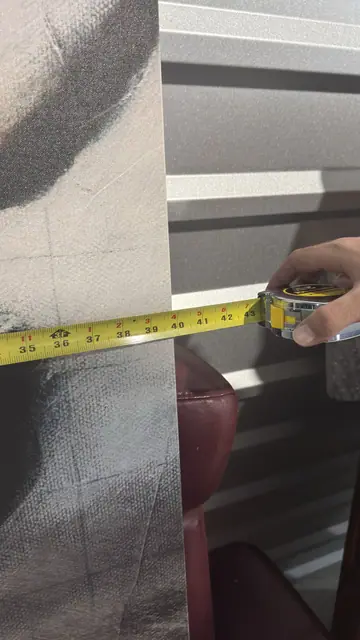
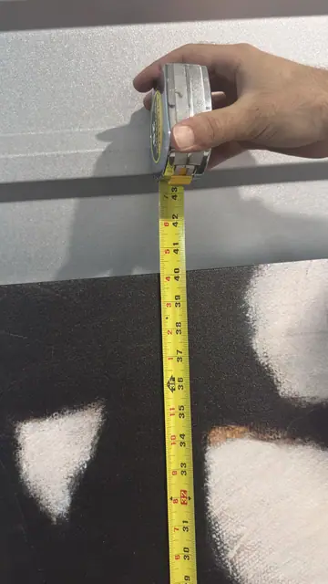

About the Item
Bold organic forms in black sweep across a luminous grey ground — a large, minimal abstract in the contemporary decorative idiom. Signed 'M. Drake' at lower left and presented unframed as a gallery-wrap canvas, it is an ideal anchor piece for modern neutral interiors. Approximately 43 inches (109.2 cm) tall. Signature lower left reads 'M. Drake' (verified from close-up). Artist not otherwise documented; confidence kept low per house rule. Height 43 in (109.2 cm) from tape photo; width illegible. Unframed gallery-wrap canvas.
Details
- Creation Year:
- 21st century
- Medium:
- Acrylic on canvas
- Period:
- 21St
- Condition:
- Offered in the condition shown in the photographs.
- Reference Number:
- VO-286